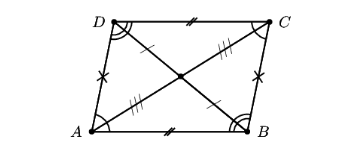
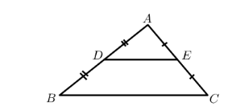
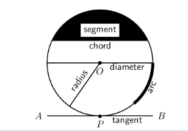
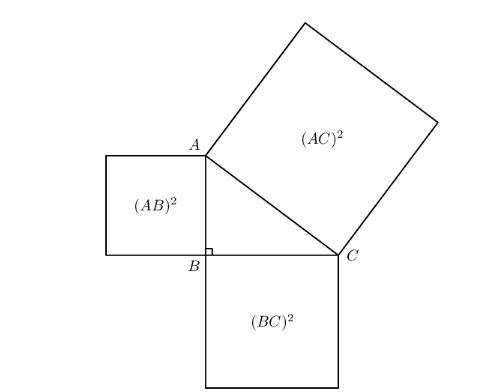
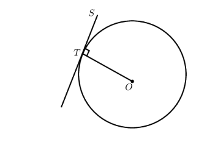
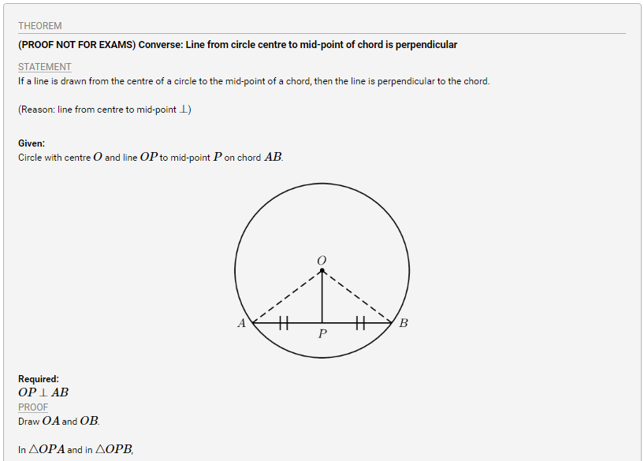
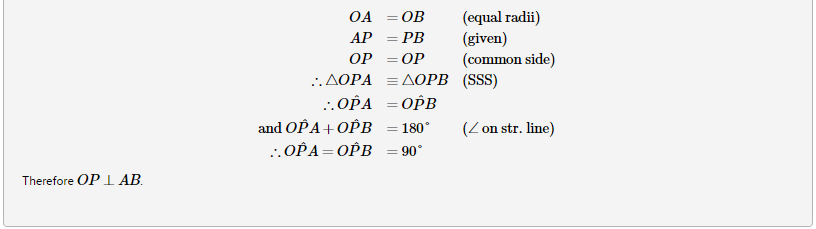

•Revision
Parallelogram
A parallelogram is a quadrilateral with both pairs of opposite sides parallel.
- Summary of the properties of a parallelogram:
- Both pairs of opposite sides are parallel.
- Both pairs of opposite sides are equal in length.
- Both pairs of opposite angles are equal.
- Both diagonals bisect each other.

The mid-point theorem
The line joining the mid-points of two sides of a triangle is parallel to the third side and equal to half the length of the third side.

Given: \( AD=DB \) and \( AE=EC \), we can conclude that \( DE\parallel BC \) and \( DE= \frac{1}{2} BC \).
•CIRCLE GEOMETRY
Terminology
The following terms are regularly used when referring to circles:
- Arc— a portion of the circumference of a circle.
- Chord— a straight line joining the ends of an arc.
- Circumference— the perimeter or boundary line of a circle.
- Radius \( (r) \) — any straight line from the centre of the circle to a point on the circumference.
- Diameter — a special chord that passes through the centre of the circle. A diameter is a straight line segment from one point on the circumference to another point on the circumference that passes through the centre of the circle.
- Segment — part of the circle that is cut off by a chord. A chord divides a circle into two segments.
- Tangent — a straight line that makes contact with a circle at only one point on the circumference.

Axioms
An axiom is an established or accepted principle. For this section, the following are accepted as axioms.
- The theorem of Pythagoras states that the square of the hypotenuse of a right-angled triangle is equal to the sum of the squares of the other two sides.
\( (AC)^2=(AB)^2+(BC)^2 \)

- A tangent is perpendicular to the radius (OT⊥ST), drawn at the point of contact with the circle.

Theorems
A theorem is a hypothesis (proposition) that can be shown to be true by accepted mathematical operations and arguments. A proof is the process of showing a theorem to be correct.
The converse of a theorem is the reverse of the hypothesis and the conclusion. For example, given the theorem “if \( A \), then \( B \)”, the converse is “if \( B \), then \( A \)”.

